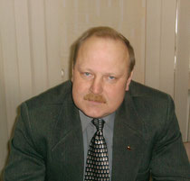

© 2021 МУРОМСКОЕ МЕСТНОЕ ОТДЕЛЕНИЕ КПРФ
Муромское Местное Отделение КПРФ
Первый секретарь

Бочаров Дмитрий Валерьевич
Члены Бюро Муромского местного отделения
Бученков Евгений Викторович
Князев Борис Владимирович
Лякин Илья Александрович
Платонов Евгений Викторович
Силуянов Александр Иванович
Тельнов Александр Игоревич
Первичные отделения
Центральное первичное отделение - секретарь ППО КНЯЗЕВ БОРИС ВЛАДИМИРОВИЧ
Южное первичное отделение - секретарь ППО ТЕЛЬНОВ АЛЕКСАНДР СЕРГЕЕВИЧ
Железнодорожное первичное отделение - секретарь ППО Силуянов Александр Иванович
Вербовское первичное отделение - секретарь ППО ЛЯКИН ИЛЬЯ АЛЕКСАНДРОВИЧ
Депутатский корпус Муромского Местного отделения КПРФ
Совет народных депутатов о. Муром
Бочаров Дмитрий Валерьвич
Границы избирательного округа
Вербовская, Дачная, Ленинградская дома с №№: 29, 29/2, 29/3, 34/1, 34/3, 34/4, 34/5, 34/6, 36/1, 36/2, 36/3, Лесная, Меленковское шоссе, Светлая,
В округ входят населенные пункты:
поселок МУРОМСКИЙ, деревня ОРЛОВО.
График приема жителей:
- КОС № 16, последняя среда месяца с 17:00
- ДК Орловский, последний четверг месяца с 17:00
- п. Муромский, последняя пятница месяца с 16:00
Галкина Инна Викторовна
Границы избирательного округа
Ленинградская дома с №№: 15, 17, 19, 20, 21, 22, 23, 24, 25, 26/1, 26/2, 26/3, 26/4, 26/6, 26/7, 28, 30, 32/1, 32/2, 32/3, 34/2,
Муромская дома с №№: 1/2, 4, 5, 9, 10, 11, 12, 13, 15, 17, 19, 21,
Озерная, площадь имени Алексея Прокуророва.
График приема жителей:
KOC № 16, последняя пятница месяца с 17:00
Проворов Василий Александрович
Границы избирательного округа
Железнодорожная казарма № 293,
Заводская дома с №№: 2, 4, 6, 8, 20,
Красногвардейский переулок,
Красногвардейская дома с №№: 1, 2, 2/А, 3, 5, 7, 8, 8/А, 9, 10, 10/А, 11, 12, 13, 15, 17, 19, 21, 23, 25, 27, 29, 30, 32, 33,
съезд Лакина,
Лакина дома с №№: 2, 4, 6, 8, 10, 14, 16, 18, 22, 24,
Ленина дома с №№: 72, 76, 78, 80, 82, 84, 86, 88, 90, 92,
Набережная дома с №№: 7, 10, 12, 14, 14/А, 15, 17, 17/А, 17/Б, 18, 30, 34, 35, 36,
Октябрьский переулок,
Октябрьская дома с №№: 1, 2, 3/А, 3/Б, 4, 5, 6, 7, 10, 18, 20,
Первомайская дома с №№: 38, 40, 42, 43, 44, 46, 47, 47/А, 48, 49, 50, 51, 51/А, 52, 53, 54, 55, 56, 56/А, 57, 58, 59, 61, 62, 64, 65, 67, 70, 71, 72, 73, 74, 75, 76, 77, 79, 79/а, 81, 84, 92, 93, 94, 95, 96, 97, 98, 99, 100, 102, 103, 104, 105, 106, 106/А, 106/Б, 106/В, 107, 109, 110, 111, 113,
Пролетарская дома с №№: 1, 1/Б, 3, 5, 6, 7, 8, 9, 10, 11, 12, 13, 14, 15, 15/А, 16, 18, 19, 20, 21, 22, 24, 26, 30, 32, 34, 50,
переулок Экземплярского,
Экземплярского дома с №№: 1, 1/А, 2, 3, 4, 5, 7, 9, 10, 10/1, 11, 11/А, 13, 13/А, 14, 14/А, 15, 17, 18, 19, 20, 21, 22, 23, 24, 25, 25/А, 28, 30, 31, 32, 33, 36, 40, 44, 45, 46, 48, 50, 52, 54.
График приема жителей:
КОС № 5, последня среда иесяца с 12:00 до 14:00
Пушкова Татьяна Сергеевна
Границы избирательного округа
Ленинградская дома с №№: 31, 33, 35, 40, 42, Меленковская дома с №№: 1/2, 2, 2/А, 3, 3/2, 4, 5, 5/1, 7, 8, 9, 10, 11, 12, 13, 14, 15, 18, 19, 20, 21, 22, 23, 26, 28, 30, 32, 36, 38, 40, 42, 44, 46, 48, 50, 52, 54, 56, 58, 60, 62, 64, 66, 68, 68/А, 70, 72, 74, 78, 80, 82, 82/А, Мечтателей, Муромская дома с №№:23, 23/2, 25, 27, 29.
График приема жителей:
КОС № 16, последняя пятница месяца с 17:00
Совет народных депутатов Муромского района

Платонов Евгений Викторович
Границы избирательного округа
с. Чаадаево: ул. Карла Маркса, ул. Комсомольская, ул. Красная, ул. Лакина, ул. Муромская (дома с № 1 по № 84), ул. Первомайская, ул.Полевая, ул.Садовая, ул.Советская
д. Коржавино; д. Макаровка
График приема жителей:
Территориальный отдел № 1 с. Чаадаево, ул. Новая, д.16
Первый понедельник месяца, с 17:00 до 19:00
Совет Народных депутатов муниципального образования "Ковардицкое" Муромского района пятого созыва
Бочков Дмитрий Игоревич
Границы избирательного округа
- д. Жемчужино, д. Иваньково, д. Кривицы, д. Кольдино, с. Лазарево, д. Новое Ратово, д. Старое Ратово, д. Черемисино